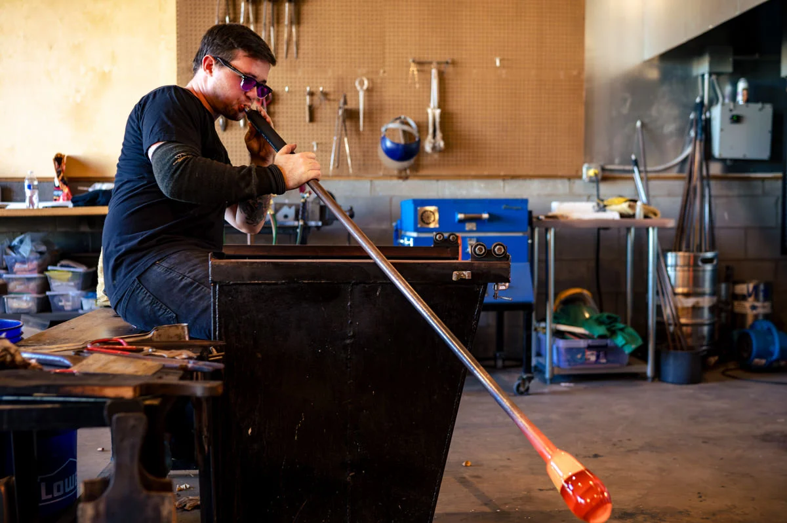

Art & Culture
River Arts District

Source: https://www.exploreasheville.com/article/how-to-spend-day-ashevilles-river-arts-district
The River Arts District has been voted Best Art District in the U.S. as part of USA Today's Reacher Choice Awards 2026. The RAD features the studios and works of over 300 local artists.
Small Batch Glass

Source: https://smallbatchglassblowing.com/
Small Batch Glass is a independent glass blowing studio and gallary. They offer demonstrations, one-on-one lessons, and have many pieces for sale.